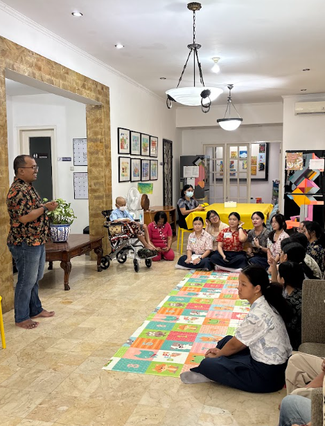

Setelah melakukan kegiatan Integrated Learning berupa perencanaan, pelaksanaan, hingga pertanggungjawaban kegiatan bazar kelas 9, kami merasa sangat bersyukur karena banyaknya pembelajaran yang kami terima dan dapatkan selama berproses bersama. Dari kegiatan Integrated Learning ini, kami menemukan banyak faktor pendukung dan penghambat yang dapat menjadi bahan evaluasi dan pembelajaran kami di kemudian hari. Seperti kemampuan untuk bekerja sama, manajemen waktu dengan baik, serta kemampuan untuk menghargai perbedaan pendapat satu sama lain. Tidak hanya itu, terdapat pula beberapa faktor penghambat yang akan kami hindari dalam proyek-proyek selanjutnya, seperti ketidakmampuan untuk mengelola waktu dengan efektif, minimnya komunikasi antaranggota, dan banyaknya kesalahpahaman yang terjadi.
Melalui berbagai tantangan dan hambatan yang telah terjadi, kami belajar banyak hal yang tentu akan sangat bermanfaat bagi kami masing-masing. Mulai dari belajar untuk bisa menjadi pribadi yang lebih sabar dan bijaksana dalam menghadapi permasalahan, mampu menyikapi perbedaan pendapat dalam diskusi kelompok, hingga belajar untuk memaafkan anggota kelompok yang melakukan kesalahan. Tentunya, kami juga dapat semakin menanamkan nilai karakter SERVIAM Persatuan, Totalitas, Cinta dan Belas Kasih, Pelayanan, Keberanian dan Ketangguhan, serta Integritas dalam setiap hal yang kami lakukan. Tidak hanya itu, kami juga menemukan bahwa dalam Amsal 23:18, dinyatakan bahwa masa depan sungguh nyata adanya, dan harapan kita tidak akan pernah hilang. Dengan begitu, kita bisa meyakini bahwa melakukan persiapan yang baik seperti belajar dengan tekun akan membawa dampak positif dan mempermudah kita dalam menggapai cita-cita yang kita harapkan.
Dengan melakukan proses berjualan dalam IL bazaar kami ini, kami semakin teringat akan pentingnya masa depan kami. Apapun profesi impian kami di masa depan, baik itu menjadi insinyur, arsitek, bahkan pebisnis seperti yang kami lakukan saat ini harus mampu membawa dampak positif bagi diri sendiri, bagi sesama, dan bagi kemuliaan Tuhan. Cita-cita sendiri berarti suatu keinginan di masa depan yang mampu memotivasi seseorang untuk berusaha menggapainya. Cita-cita yang pasti dan konsisten sudah harus dimiliki, khususnya di usia SMP dan SMA ini. Memiliki cita-cita juga penting karena dapat membantu kami dalam memilih penjurusan ketika memasuki masa SMA dan kuliah sehingga mampu memenuhi kebutuhan pendidikan kami kedepannya. Cita-cita kita di masa depan sudah seharusnya mampu memberi dampak dan memberi pengaruh bagi sesama. Misalnya, jika ingin menjadi seorang dokter, maka jadilah seorang dokter yang bercita-cita untuk mampu melayani di wilayah terpencil tanpa memungut biaya kepada masyarakat. Jika ingin menjadi seorang pebisnis, maka jadikanlah donasi sebagai tujuan awal. Khususnya dalam pelaksanaan IL ini, kami mengumpulkan keuntungan untuk berdonasi. Bukan berdonasi karena keuntungan.
Sayangnya, para remaja dan generasi muda saat ini masih memiliki beberapa hambatan dalam usaha mewujudkan cita-cita mereka di masa depan. Berbagai faktor seperti manajemen waktu yang kurang baik, kurangnya fasilitas yang memadai, perkembangan teknologi yang tidak dimanfaatkan dengan baik, hingga munculnya sifat fomo (fear of missing out) pada sebagian besar remaja. Manajemen waktu yang kurang baik juga dapat disebabkan oleh banyaknya distraksi sehingga kegiatan yang dilakukan tidak terfokus dan membutuhkan waktu serta konsentrasi yang lebih lama, misalnya kebiasaan menunda pekerjaan (procrastinating) dalam belajar. Tidak hanya itu, banyak remaja di luar sana, khususnya yang tinggal di daerah terpencil yang belum mendapatkan akses teknologi dan ilmu pengetahuan serta akses pendidikan yang memadai. Sebaliknya, para remaja yang tinggal di daerah perkotaan sangat sering mengalami kontak dengan teknologi, khususnya AI yang sayangnya sering dimanfaatkan dengan tidak bijak. Misalnya untuk mencari jawaban pr tanpa berusaha terlebih dahulu, sehingga mulai menanamkan budaya negatif dalam mudah menyerah pada diri mereka. Terakhir, sifat fomo yang adalah ketakutan akan ketertinggalan pada suatu tren juga menjadi salah satu penyebab inkonsistensi dalam menentukan cita-cita demi mengikuti tren yang sedang ramai. Misalnya, cita-cita yang berubah setiap bulan karena ingin dianggap keren. Karena banyaknya faktor ini, maka diperlukan sifat konsisten serta tekad dan niat yang kuat untuk melawan segala godaan dalam mempersiapkan cita-cita di masa depan.
Kami menyadari bahwa apapun pekerjaan atau pelayanan yang kami lakukan di masa depan, kami harus berusaha menjadi garam dan terang bagi dunia. Sama halnya seperti yang tertulis dalam Alkitab Injil Matius 5:13-16. Menjadi garam berarti mampu memberikan dampak berdasarkan kualitas, layaknya garam laut yang dengan kuantitas kecil mampu memberi rasa asin yang kuat pada makanan, begitu pula kita sebagai anak-anak Allah sebaiknya memiliki tujuan hidup, yaitu mampu membawa dampak positif bagi dunia dari tindakan yang kita lakukan dan menyadari bahwa setiap partisipasi kecil kita juga mampu memberi dampak bagi orang lain. Menjadi terang bagi dunia berarti mampu membawa terang bagi sesama, menerangi sisi dunia yang masih penuh dengan kegelapan dan memerlukan uluran cinta kasih Tuhan. Kami juga menemukan salah satu kalimat populer dari murid Yesus, yakni Yakobus Anak Zebedeus dalam Yakobus 2:17 bahwa iman tanpa disertai perbuatan pada hakekatnya adalah mati, sehingga demikian pula kita harus senantiasa berencana, berbuat, dan didampingi oleh doa penuh iman dan kepercayaan kepada Tuhan, bahwa Ia akan membantu kita dalam meraih hal yang terbaik bagi diri kita.
Tidak hanya bersumber dari Alkitab, ajaran-ajaran Gereja Katolik terkait cita-cita dan masa depan ini juga tercantum dalam Evangelii Gaudium yang merupakan seruan apostolik dari Paus Fransiskus nomor 273 yang berbunyi “I am a mission on this earth; that is the reason why I am here in this world. We have to regard ourselves as sealed, even branded, by this mission of bringing light, blessing, enlivening, raising up, healing and freeing. All around us we begin to see nurses with soul, teachers with soul, politicians with soul, people who have chosen deep down to be with others and for others. But once we separate our work from our private lives, everything turns grey and we will always be seeking recognition or asserting our needs. We stop being a people” dan memiliki arti bahwa kita sendiri memiliki misi di bumi untuk membawa terang, menghidupkan, dan menjadi berkat bagi orang lain. Banyak sekali orang-orang yang bekerja dengan sepenuh hati di sekitar kita. Ketika kita tidak melakukan pekerjaan kita dengan sepenuh hati dan mengeluarkannya dari kehidupan kita, maka tujuan kita berubah menjadi hanya untuk mencari pengakuan dari orang lain. Oleh karena itu, sangat penting untuk mulai menentukan cita-cita yang diharapkan sejak dini.
Selain dari ajaran yang tercantum dalam Alkitab dan Evangelii Gaudium, kami juga menemukan bahwa dalam Kompendium Ajaran Sosial Gereja Katolik nomor 242, terdapat sebuah kutipan kalimat yang berbunyi “Pendidikan pribadi manusia dalam keterarahan kepada tujuan terakhirnya, serentak kepada kesejahteraan masyarakat, di mana manusia menjadi anggotanya dan tugas-tugasnya sekali kelak akan diambil oleh manusia tersebut jika ia sudah menjadi dewasa” sehingga kami menyadari bahwa pendidikan yang kami jalani saat ini juga adalah suatu bentuk persiapan untuk masa depan yang gemilang. Dengan demikian, kami dapat semakin menyadari bahwa pendidikan adalah salah satu fondasi penting dalam mempersiapkan masa depan.

Berdonasi merupakan salah satu latar belakang dan tujuan kami mengadakan bazar ini dan mengusahakan adanya keuntungan. Dalam tahap donasi setelah berakhirnya bazar, kami turut menghayati nilai karakter SERVIAM yang sudah tertanam dalam diri kami setidaknya mulai kelas 7. Nilai SERVIAM yang kami temukan paling menonjol dalam kegiatan donasi ke YKAI ini adalah Pelayanan serta Cinta & Belas Kasih. Dalam nilai pelayanan, kami belajar untuk melayani sesama seperti saudara kami sendiri. Dengan berkunjung serta mendoakan mereka, kami sekaligus menerapkan sebuah karya pelayanan sederhana yang menjadi langkah awal karya pelayanan kami selanjutnya. Selain itu, kami menghayati nilai cinta & belas kasih dengan belajar untuk mencintai dan mengasihi sesama yang membutuhkan dukungan serta semangat dari kami. Sebagai siswi SMP Santa Ursula Jakarta, kami juga tentunya sangat dekat dengan kata-kata dan nasihat Santa Angela. Selama melakukan kegiatan donasi ini, kami menyadari bahwa kata-kata Santa Angela dari Prakata Warisan Kesembilan Nomor 4 yang berbunyi “gunakanlah pendapatan yang ada demi kesejahteraan dan perkembangan Kompani dengan kebijaksanaan dan cinta kasih seorang ibu” cukup mirip dengan keadaan yang kami alami saat ini, yakni kami mempergunakan pendapatan bazar kami untuk kesejahteraan anak-anak YKAI, yang mana kami memberikan donasi ini dengan penuh cinta kasih.Selama proses pelaksanaan bazar IL Besar dan penampilan yang dilakukan secara berkelompok, kami juga turut menghidupi semangat dalam menggapai cita-cita. Kami menyadari banyaknya modal dalam mempersiapkan cita-cita yang bisa kami dapatkan dari pengalaman ini. Kami belajar untuk bekerja keras dalam menggapai cita-cita dengan belajar giat, layaknya bekerja keras dalam melakukan tahap persiapan. Selain itu, kami juga belajar untuk berani tampil di depan orang lain. Saat ini, kami sudah membekali diri dengan berlatih melakukan presentasi di sekolah. Selama pelaksanaan bazar, kami juga tampil dalam bentuk senam irama sebagai penilaian mata pelajaran Penjas. Tidak hanya itu, kami juga belajar untuk mampu menghargai perbedaan pendapat. Selama berdiskusi, khususnya pada tahap perencanaan, kami menghadapi banyak perbedaan pendapat. Di awal, mungkin hal ini menjadi penghambat, namun kami belajar dari kesalahan dan akhirnya mampu menghargai perbedaan, seperti sikap kami seharusnya dalam dunia kerja di masa depan. Dalam menghadapi konflik, kami juga belajar untuk menjadi pribadi yang sabar dan tidak mudah terbawa emosi. Hal ini sangat dibutuhkan dalam dunia kerja, khususnya saat bersosialisasi dengan orang lain. Terakhir, kami juga belajar untuk mampu membuat keputusan yang baik. Dalam menentukan harga jual, menentukan produk yang akan dijual, dan sebagainya, dibutuhkan banyak pertimbangan dan keahlian untuk menghasilkan keputusan yang maksimal. Begitu juga halnya dengan menentukan apa cita-cita di masa depan. Terwujud atau tidaknya cita-cita yang kita miliki juga bergantung pada pilihan kita saat ini. Jika kita ingin menggapai cita-cita, maka kita harus memprioritaskan belajar daripada bermain, dan hal ini sudah mulai kami lakukan sejak dini.
Sebagai kesimpulan, merencanakan masa depan, khususnya cita-cita secara matang sejak dini merupakan hal yang sangat penting. Hal ini juga didukung oleh ajaran-ajaran Gereja, khususnya tentang bagaimana umat Katolik sudah seharusnya mampu menjadi dampak positif bagi lingkungan di sekitarnya. Melalui IL bazar dan melalui kelompok Swarna Rasa, kami mendapatkan modal pembelajaran untuk mempersiapkan diri dalam merencanakan cita-cita yang harapannya dapat terwujud di masa depan. Salah satu ayat dari Efesus, tepatnya Efesus 2:10 yang berbunyi “Karena kita ini buatan Allah, diciptakan dalam Kristus Yesus untuk melakukan pekerjaan baik, yang dipersiapkan Allah sebelumnya. Ia mau, supaya kita hidup di dalamnya” juga mendukung suatu cita-cita yang baik dan positif. Kita sebagai manusia yang merupakan citra Allah sendiri, sudah sepantasnya bercita-cita menjadi pribadi yang bermanfaat, dan mampu melakukan pekerjaan yang mulia. Namun, sekuat apapun kita berjuang, kita tentunya tidak boleh lupa bahwa Allah sudah mempersiapkan suatu rencana yang indah pada waktu yang tepat. Kita sebaiknya mampu menghidupi rencana-rencana baik Allah dalam diri kita. Dengan melakukan perencanaan akan cita-cita yang baik, kita setidaknya dapat meningkatkan kemungkinan tercapainya cita-cita yang kita miliki saat ini.
Sebagai penutup refleksi ini, kami berharap mampu terus berusaha sebaik mungkin demi menggapai cita-cita yang diinginkan. Tentunya, semua proses yang kami lewati penuh dengan makna dan akan menjadi bekal berharga bagi kami suatu hari nanti. Oleh karena itu, belajar giat adalah bentuk tindakan nyata kami saat ini untuk terus berkembang menjadi pribadi yang lebih baik demi keberhasilan di masa depan. Hal ini tidak lupa pula kami sertai dengan kebiasaan berdoa dan mengandalkan Tuhan, sebagaimana tertulis dalam 2 Tawarikh 31:21: “Dalam setiap usaha yang dimulainya untuk pelayanannya terhadap rumah Allah, dan untuk pelaksanaan Taurat dan perintah Allah, ia mencari Allahnya. Semuanya dilakukannya dengan segenap hati, sehingga segala usahanya berhasil.” Berdasarkan firman tersebut, kami menyimpulkan bahwa usaha apa pun yang dilakukan dengan sepenuh hati sekaligus penuh kepercayaan pada kuasa Tuhan, niscaya segala hal akan indah pada waktunya. Ora et labora: doa menuntun, usaha mewujudkan.